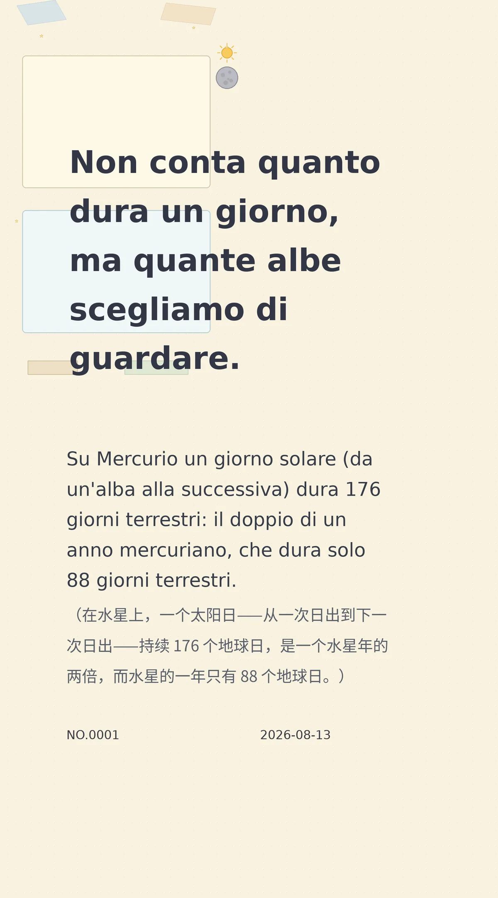

Non conta quanto dura un giorno, ma quante albe scegliamo di guardare.
Su Mercurio un giorno solare (da un'alba alla successiva) dura 176 giorni terrestri: il doppio di un anno mercuriano, che dura solo 88 giorni terrestri.（在水星上，一个太阳日——从一次日出到下一次日出——持续 176 个地球日，是一个水星年的两倍，而水星的一年只有 88 个地球日。）
6d4c57c40282ed1f冷知识由执笔的模型自行查证。逐条断言、来源与所引原句存档在纯文字副本里，未经程序逐字校验，留作事后核实。